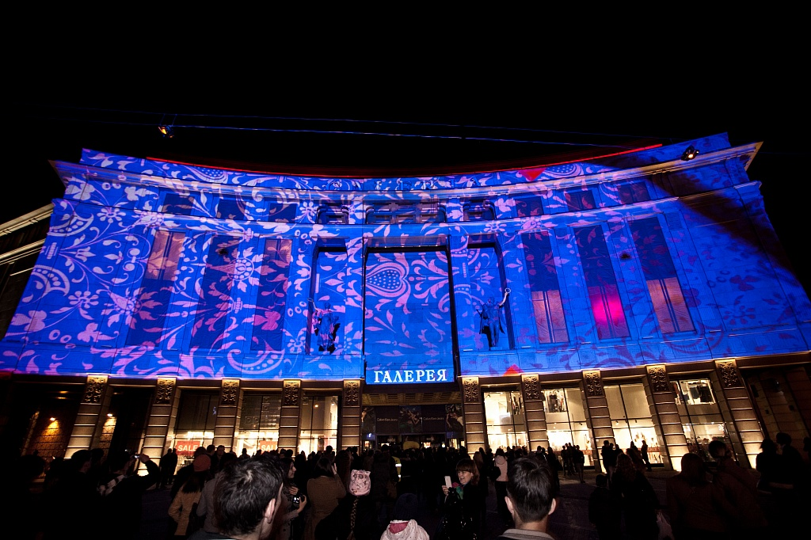
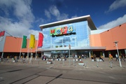
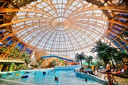
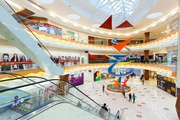
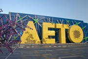

Торговые центры Санкт-Петербурга
1. Торгово-развлекательный центр «Галерея»

В торгово-развлекательном центре «Галерея» можно купить практически всё, что нужно современному человеку для комфортной жизни. На пяти этажах находятся 300 магазинов, боулинг, парк аттракционов, 10 кинозалов, 30 кафе и ресторанов и новый фудхолл Eat Market с ещё 40 заведениями, подземная парковка на 1 300 мест.
Адрес: Лиговский просп., д. 30А
2. Торговый центр МЕГА

В Санкт-Петербурге работают две МЕГИ: на Дыбенко и Парнасе. Оба семейных торгово-развлекательных центра считаются одними из крупнейших в Северной столице. На территории расположены мультиплексы, всевозможные магазины, разнообразные кафе и рестораны, а также детские игровые площадки.
Адрес 1: Ленинградская обл., Всеволожский район, Мурманское шоссе, 12 км
Адрес 2: Всеволожский район, Бугровское сельское поселение, д. Порошкино, 117 км КАД (внешнее кольцо) ул., стр. 1
3. Торгово-развлекательный центр «Питерлэнд»

На пяти этажах этого торгового центра находится 130 магазинов известных брендов. Имеется кинотеатр, аттракционы и детская зона, но главным развлечением этого места является самый большой крытый аквапарк в России — Piterland AQUA. Его площадь составляет 25 000 м².
Адрес: просп. Приморский, д. 72а
4. Торгово-развлекательный комплекс «Европолис»

Архитектурный облик центра соединил в себе элементы образов четырех столиц: Лондона, Парижа, Рима и Барселоны. Здесь вы найдёте французскую утонченность, итальянскую классику, британскую основательность и испанский темперамент. На его территории разместились PRISMA, Media Markt, кинотеатр «Мираж Синема», «Детский мир», «МАМА Детям», парк активного отдыха для всей семьи Angry Birds Activity Park, гипермаркет товаров для хобби «Леонардо», «Рив Гош», «Л’Этуаль», «Спортмастер» и другие арендаторы.
Адрес: Полюстровский просп., д. 84А
5. Торгово-развлекательный комплекс «ЛЕТО»

Один из крупнейших торговых центров города Здесь представлены такие лидеры в одежде, как H&M, Topshop, Zara, Pull And Bear, Lady & Gentleman и другие, всего более 180 магазинов. В комплексе вас ждут наземная парковка на 3 200 мест, гипермаркет «Ашан», кинотеатр «Люксор», спортивный гипермаркет «Декатлон», дизайн-студия ИКЕА и универмаг «Детский мир».
Адрес: Пулковское ш., д. 25, к. 1
6. Торгово-развлекательный комплекс «Сити Молл» на Пионерской
 Вариант, когда в одном месте можно сделать покупки на неделю, приобрести подарки к предстоящему торжеству и с пользой отдохнуть всей семьей. В новом фудхолле CITY FOOD расположилось 30 ресторанов на 1100 посадочных мест.
Вариант, когда в одном месте можно сделать покупки на неделю, приобрести подарки к предстоящему торжеству и с пользой отдохнуть всей семьей. В новом фудхолле CITY FOOD расположилось 30 ресторанов на 1100 посадочных мест.
Адрес: Коломяжский просп., д. 17 к. 2
7. Торговый комплекс «Невский Центр»
 Семиэтажный торговый комплекс на площади Восстания с магазинами, кафе, СПА и фитнес-центром. Большую часть комплекса занимает известный финский магазин «Стокманн», где можно найти качественные товары для дома, одежду и обувь, гастроном.
Семиэтажный торговый комплекс на площади Восстания с магазинами, кафе, СПА и фитнес-центром. Большую часть комплекса занимает известный финский магазин «Стокманн», где можно найти качественные товары для дома, одежду и обувь, гастроном.
Адрес: Невский просп., д. 114-116